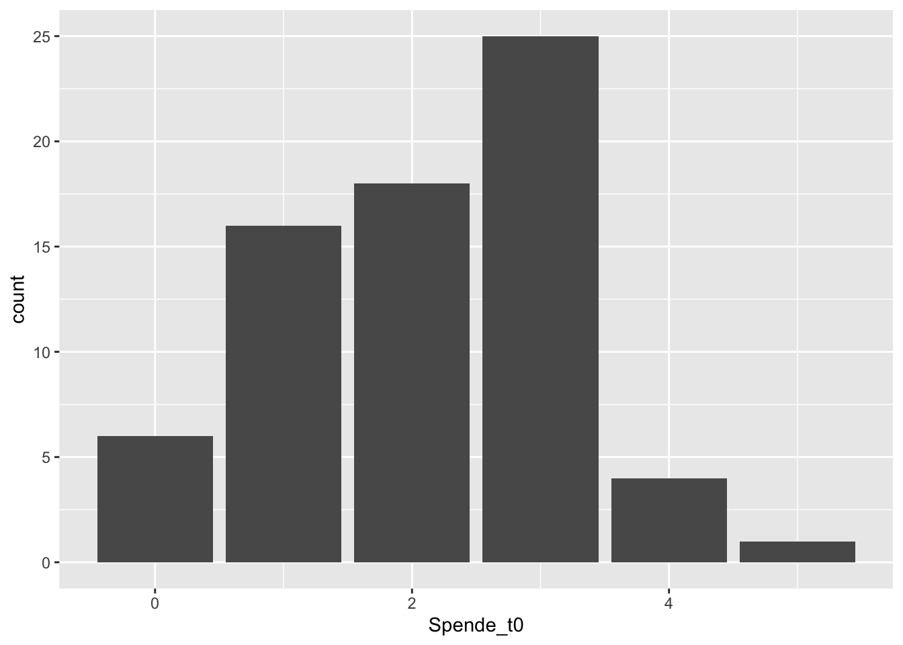
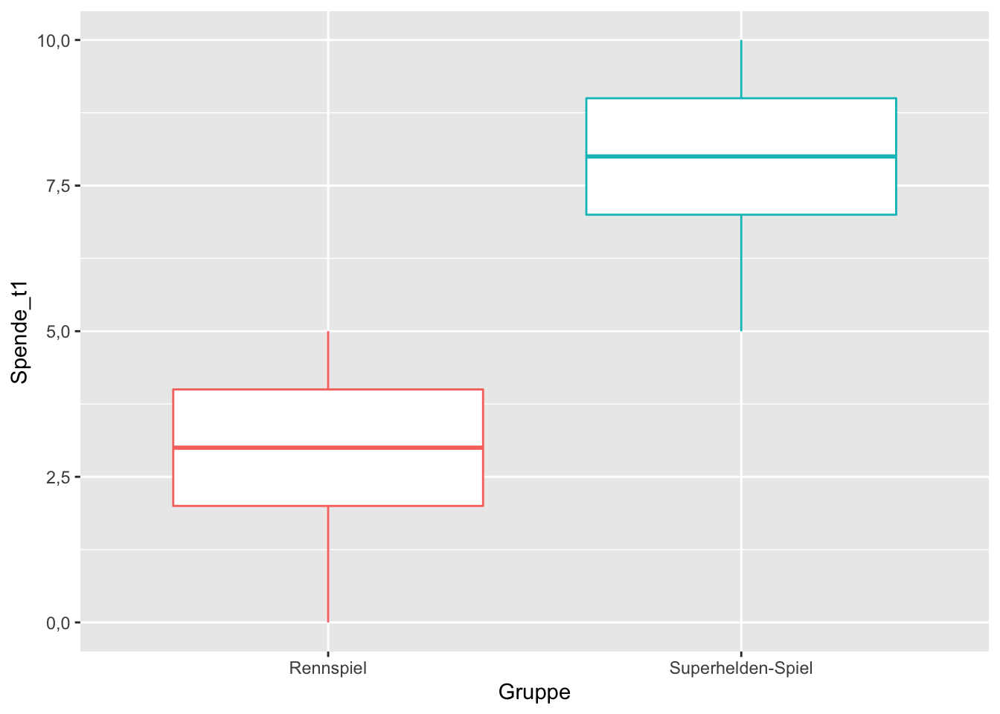
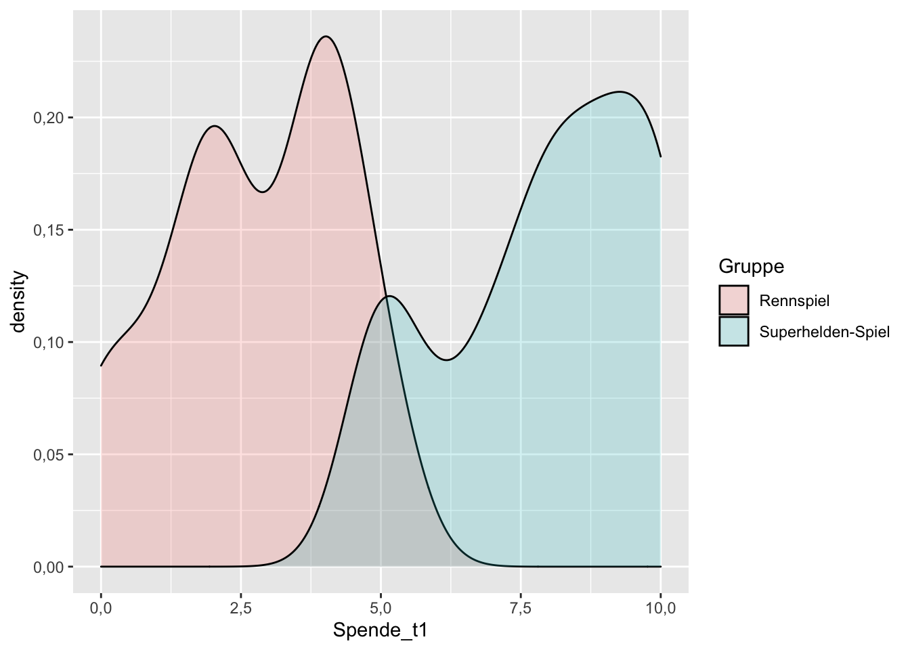
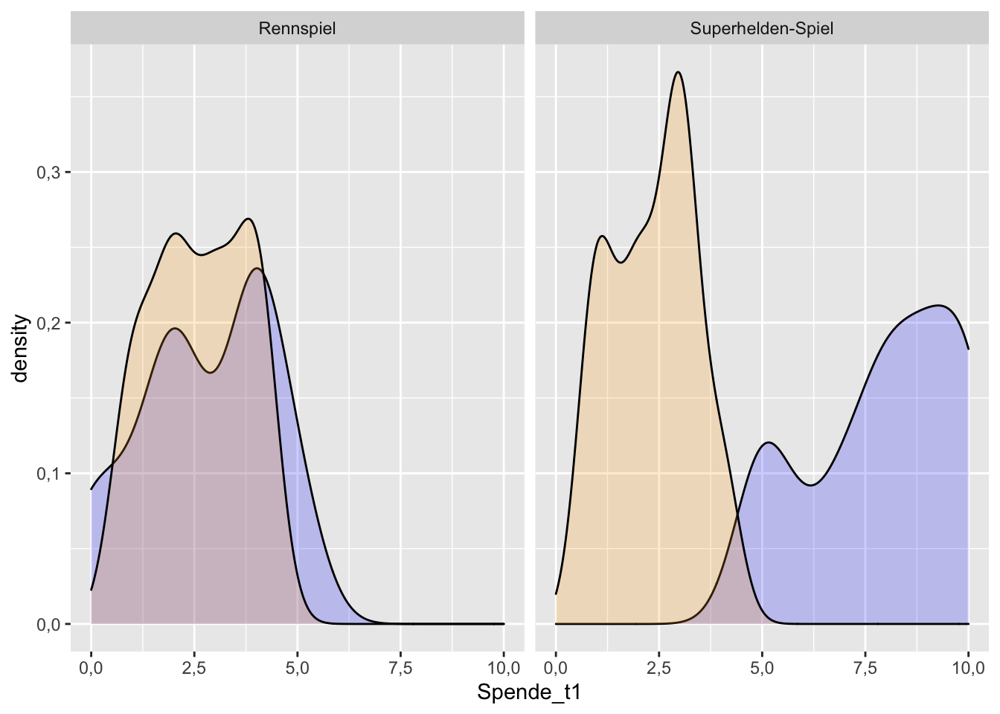

Kapitel 11 T-Tests
Die Erarbeitung dieses Kapitels erfolgte auf Basis eines Skripts, welches Daniel Possler 2021 für die Veranstaltung SDA2 erstellt hat. Gegenüber dem Skript aus der Veranstaltung wurde jedoch das Datenbeispiel erweitert, damit der Einstichproben-T-Test demonstriert werden kann. Außerdem wurden die Funktionen auf ein tidyverse-konformes Paket (rstatix) angepasst.
In diesem Kapitel werden verschiedene Varianten des T-Tests behandelt. Bei T-Test geht es immer um den Vergleich von Mittelwerten, also um Unterschiedshypothesen. Als T-Tests werden eine Reihe von Null-Hypothesen-Tests bezeichnet, deren Prüfgröße auf der T-Verteilung basiert. T-Tests wurden ursprünglich von William S. Gosset entwickelt, der für die Guinness-Brauerei daran arbeitete, die Qualität der Gerste abzuschätzen, damit das Bier einen gleichbleibenden Qualitätsstandard erfüllen konnte. Gosset entwickelte den T-Test und wollte seine Erkenntnisse gerne mit anderen Forschenden teilen. Da Guinness die Offenbarung von Betriebsgeheimnissen fürchtete, war es Mitarbeitenden der Brauerei jedoch verboten, ihre Erkenntnisse unter ihrem Namen zu veröffentlichen. Gosset nutzte deshalb das Pseudonym “Student.” T-Tests sind deshalb heute auch als “Student´s T-Test” bekannt.
Es gibt verschiedene Varianten des T-Tests, von den hier drei besprochen werden:
Beim diesem Ein-Stichproben-T-Test (1-sample-test) wird geprüft, ob sich ein das arithmetische Mittel (Mittelwert) von einem zuvor festgelegten Wert unterscheidet.
Mit dem T-Test für unabhängige Stichproben (2-sample-test, t-test for independent samples) kann man prüfen, ob sich die Mittelwerte einer bestimmten Variable in zwei Populationen voneinander unterscheiden. – Verglichen wird also der Mittelwert in ein und dieselben Variable aber in zwei Gruppen.
Der T-Test für abhängige Stichproben (t-test for paired samples) testet, ob sich zwei miteinander zusammenhängende Mittelwerte von einander unterschieden. Die Stichproben, die verglichen werden, hängen also irgendwie miteinander zusammen. Das kann z.B. der Fall bei einer Vorher- und einer Nachher-Messung in einem Experiment sein. Oder wenn in einem Datensatz beide Partner:innen einer Beziehung befragt werden. Oder wenn einfach zwei verschiedene Kennwerte miteinander vergleichen werden sollen. Im Datensatz liegen die beiden “Stichproben” also als zwei verschiedene Variablen vor.
11.1 Datenbeispiel
In den folgenden Analysen wird ein Beispieldatensatz mit per Zufallsgenerator erzeugten Daten verwendet, den Daniel Possler und ich erstellt haben. In der fiktiven Studie, zu der der Datensatz gehört, soll untersucht werden, ob das Spielen von unterschiedlichen Videospielen einen Einfluss auf die Spendenbereitschaft (pro-soziales Verhalten) hat.
Konkret beinhalten die Daten ein Experimentaldesign, in dem geprüft wird, ob die Spendenbereitschaft davon abhängt, ob die Proband:innen in einem Videospiel einen Superhelden steuern oder nicht.
Für eine Baseline-Messung war vor dem Gebäude, in dem die Studie stattfand, ein Schauspieler platziert, der sich als Obdachloser ausgab. Er bat jede:n Proband:in, bevor er/sie zur Studie hereinkam, um “eine kleine Spende.” Der Betrag, den die Proband:innen dem Schauspieler gaben wurde in den Datensatz eingetragen (Variable: Spende_t0).
Im Anschluss wurden die N = 70 Versuchspersonen zufällig und gleichmäßig auf zwei Experimentalgruppen aufgeteilt (n₁ = 35 und n₂ = 35; Variable: Gruppe).
Gruppe 1 wurde gebeten, zwanzig Minuten lang ein Superhelden-Spiel zu spielen.
Gruppe 2 spielte hingegen genauso lange ein Rennspiel.
Zum Dank erhielten die Proband:innen eine Aufwandsentschädigung von 10 Euro. Es wurde ihnen die Möglichkeit eingeräumt, dieses Geld für einen wohltätigen Zweck zu spenden – entweder vollständig oder teilweise. Die Höhe der Spende wurde für jede Versuchsperson erfasst (Variable: Spende_t1).
Um die Stabilität der Effekte untersuchen zu können, wurden die Proband:innen drei Tage nach der Teilnahme noch einmal eingeladen. Sie erhielten wieder eine Aufwandsentschädigung von 10 Euro und konnten erneut einen Teil oder die vollständige Summe spenden (Variable: Spende_t2).
Hier ein kurzer Blick in den Datensatz:
head(df_prosocial)## # A tibble: 6 x 5
## Vpn Gruppe Spende_t0 Spende_t1 Spende_t2
## <dbl> <chr> <dbl> <dbl> <dbl>
## 1 1 Superhelden-Spiel 3 7 3
## 2 2 Superhelden-Spiel 3 8 1
## 3 3 Superhelden-Spiel 0 10 3
## 4 4 Superhelden-Spiel 3 9 3
## 5 5 Superhelden-Spiel 3 10 2
## 6 6 Superhelden-Spiel 1 7 211.2 Einstichproben-T-Test
Der Einstichproben-T-Test kommt häufig zum Einsatz. Z. B. immer dann, wenn in einer Regression getestet wird, ob sich die Regressionskoeffizienten signifikant von Null unterscheiden. Der Wert, gegen den getestet wird, ist in dem Fall einfach Null. Es ist aber auch möglich, gegen einen anderen, selbst festgelegten Wert zu testen.
Mit dem Einstichproben-T-Test könnte man z. B. die folgenden Hypothesen auf den Prüfstand stellen:
Der IQ in einer Gruppe von Befragten unterscheidet sich signifikant vom Wert 100.
Die politische Einstellung auf einer links-rechts-Skala weicht deutlich nach rechts vom Skalenmittel ab.
Die Länge von Zeit-Online-Artikeln liegt über 3.000-Zeichen.
Die Anwendungsvoraussetzung für den Einstichproben-T-Test ist das Datenniveau. Die betrachtete Variable muss logischerweise intervallskaliert sein – bei nominalem oder ordinalem Datenniveau würde die Berechnung eines arithmetischen Mittels ja auch keinen Sinn ergeben.
11.2.1 Hypothese aufstellen
In unserem Fallbeispiel möchten wir zunächst untersuchen, wie es allgemein um das prosoziale Verhalten der Versuchspersonen bestellt ist – ganz unabhängig von dem Experiment. Wir nutzen dazu die Variable Spende_t0 und klären die Frage, ob die Versuchspersonen dem vermeintlichen Obdachlosen im Mittel mehr oder weniger als einen bestimmten Wert gespendet haben. Da es sich bei den Werten in der Variable um Angaben in Euro handelt, erfüllt die Variable das erforderliche Datenniveau.
Bevor es mit dem T-Test losgehen kann, muss noch eine Hypothese aufgestellt werden. Wir müssen einen Wert festlegen, gegen den wir testen wollen. Diesen Wert können wir frei wählen, wir könnten z.B. schauen ob die Spenden signifikant über Null liegen oder von 1,50 Euro abweichen. Normalerweise müsste die Hypothese natürlich begründet werden, aber ich lege sie jetzt einfach mal wie folgt fest:
H1: Die Spendenbereitschaft der Versuchspersonen liegt zum Zeitpunkt T0 signifikant über 1,50 Euro.
Diese Hypothese ist einseitig gerichtet. Sie gilt als zutreffend, wenn (1) der Mittelwert der Variable Spende_t0 größer als 1,5 ist und (2) der T-Test ein signifikantes Ergebnis zeigt.
11.2.2 Daten explorieren
Natürlich empfiehlt es sich immer vor einer Analyse die Verteilung seiner Variablen zu kennen und sie durch Grafiken und deskriptive Statistiken zu explorieren. Gut geeignet erscheint in diesem Fall ein einfaches Bar-Chart, bei metrischen Variablen mit sehr vielen Ausprägungen wäre ein Histogramm besser:
df_prosocial %>%
ggplot(aes(x = Spende_t0)) +
geom_bar() 
Oh! Sehr schön, viele Versuchspersonen sind spendabel! – Und halbwegs normalverteilt sieht der Plot sogar auch aus… er ist ein wenig linksschief.
Normalverteilung der Variablen? – Nicht nötig!
Manchmal wird angegeben, dass die “Normalverteilung der Variablen in der Grundgesamtheit” (wahlweise auch “in der Stichprobe”) eine Anwendungsvoraussetzung für den T-Test sei. Dies ist nicht der Fall! Das Verfahren wäre dann auch ziemlich eingeschränkt, denn für Variablen, die nun einmal einfach “schief” verteilt sind und natürlicherweise nicht normalverteilt vorliegen (wie bspw. Alter oder Einkommen), könnte man es nicht anwenden.
Richtig ist: Der T-Test setzt lediglich voraus, dass sich Stichprobenmittelwerte über verschiedene Samples hinweg normal verteilen – was nach zentralem Grenzwerttheorem bei randomisierten Stichproben der Fall sein sollte (hier meine Lieblings-Erklärung zum zentralen Grenzwertsatz).
Mit deskriptiven Statistiken können wir herausfinden, wo der Mittelwert der Verteilung liegt, beispielsweise könnte man dazu die mean()- Funktion benutzen. Die describe()-Funktion aus psych liefert noch ein umfassenderes Bild:
library(psych)
describe(df_prosocial$Spende_t0)## vars n mean sd median trimmed mad min max range skew kurtosis se
## X1 1 70 2,1 1,1 2 2,1 1,5 0 5 5 -0,1 -0,6 0,14Tatsächlich, der Mittelwert liegt bei 2,1, also deutlich über 1,5 Euro. Das spricht schon einmal für die Hypothese H1. Aber wie sieht es mit der zweiten Bedingung aus? Dazu benötigen wir den Signifikanzwert des T-Tests.
11.2.3 T-Test durchführen
Der T-Test ist im stats-Package von R bereits mit eingebaut und zwar über die Funktion t.test(). Man kann aber auch das Paket rstatix und dessen Funktion t_test() benutzen. Das Paket hat es sich zum Ziel gesetzt, für einfache statistische Tests eine tidyverse-Variante anzubieten. Deshalb kann die Funktion t_test() in der Pipe verwendet werden, was später noch nützlich sein wird. Und sie liefert als Ergebnis einen tibble zurück, der in der Ausgabe sehr übersichtlich ist und der sich leicht in eine APA-konforme Darstellung umbauen lässt.
Die wichtigsten Argumente der t_test()-Funktion aus rstatix werden hier kurz erläutert:
Das Datenargument, also den Datensatz, der die Variablen enthält. Wie im Tidyverse üblich kann man ihn als erstes Argument über die Pipe übergeben.
Eine Formel, die die statistische Modellierung nach R übersetzt. Solche Formeln sind schon aus dem Kapitel Regression bekannt. Die Tilde
~verbindet dabei die Variablen der Analyse mit einander. Tilde bedeutet übersetzt in Worte an dieser Stelle etwa “die Variable vor der Tilde wird verglichen mit dem Wert nach der Tilde.” Die Notation ist immerVariable1 ~ Variable2. Im Fall des Einstichproben-T-Tests gibt es jedoch nur eine Variable und die entsprechende Formel lautetVariable1 ~ 1.Über
mukann der Testwert angegeben werden. Lässt man das Argument weg, wird automatisch vom Testwert “0” ausgegangen.Mit
alternativelässt sich festlegen, ob der Test ein- oder zweiseitig erfolgen soll, wobei letzteres der Standard ist. Möchte man einseitig prüfen muss man konkret angeben, ob der Mittelwert kleiner als der Testwert sein soll ("less") oder größer ("greater").Mit
detailed= TRUEkann eine ausführlichere Darstellung angefordert werden. Standardmäßig ist das Argument jedoch aufFALSEgesetzt.
Fordern wir zunächst die nicht-detaillierte Standard-Ausgabe an:
library(rstatix)
df_prosocial %>%
t_test(Spende_t0 ~ 1, mu = 1.5, alternative = "greater") ## # A tibble: 1 x 7
## .y. group1 group2 n statistic df p
## * <chr> <chr> <chr> <int> <dbl> <dbl> <dbl>
## 1 Spende_t0 1 null model 70 4.52 69 0.0000123Die Tabelle fasst das Ergebnis zusammen. Weiter vorne in der Tabelle finden sich ein paar Angaben zum durchgeführten Test, z.B. der Name der Variable und die Fallzahl n. Das in der Spalte “group1” eine 1 und unter “group2” nur “null model” steht, zeigt an, dass hier ein Einstichproben-T-Test durchgeführt wurde. Wichtig ist aber insbesondere, was hinten in der Tabelle steht: Unter “statistic” wird der T-Wert ausgegeben. Die Spalte “df” liefert die entsprechenden Freiheitsgrade und p den zum T-Wert gehörigen Signifikanzwert. Da p kleiner als .05 ist, kann die Hypothese als bestätigt angenommen werden.
Über das Argument detailed = TRUE erhält mannoch eine ausführlichere Darstellung die auch die Difefrenz zwischen Mittelwert und Testwert sowie die Grenzen des Konfidenzintervalls enthält. Da die Tabelle sehr breit ist, kann sie hier nicht dargestellt werden. Aber probieren Sie es gerne aus!
11.2.4 Cohen´s d
Das rstatix-Paket enthält auch eine Funktion zur Berechnung der Effektstärke in Form von Cohen´s d (cohens_d()). Die Funktion benötigt als Argumente dieselbe Formel wie der zugehörige T-Test und natürlich auch den Test-Wert:
df_prosocial %>%
cohens_d(Spende_t0 ~ 1, mu = 1.5) ## # A tibble: 1 x 6
## .y. group1 group2 effsize n magnitude
## * <chr> <chr> <chr> <dbl> <int> <ord>
## 1 Spende_t0 1 null model 0.541 70 moderateDie Ausgabe fasst noch einmal den Test zusammen und nennt unter “effsize” den Wert für Cohen´s d. In der letzten Spalte wird außerdem eingeordnet, wie stark der Effekt ist. Die Grenzen für die Einordnung der Effektstärke sind die, die Cohen selbst nennt (Cohen 1992): |d| < 0.2 “negligible,” |d| < 0.5 “small,” |d| < 0.8 “moderate,” |d| >= “large.”
Abschließend können wir die Hypothese H1 positiv beurteilen: Der Mittelwert M = 2,11 der Variable Spende_t0 unterscheidet sich tatsächlich auf dem Niveau p < ,001 vom Testwert 1,5 (t(69) = 4,52). Cohen´s d = 0,54 bescheinigt eine mittlere Effektstärke.
T-Tests mit dem stats-Paket
Für T-Tests benötigt man eigentlich gar kein Zusatzpaket, weil die Funktion t.test() bereits im stats-Pakage (also in base-R) eingebaut ist (man beachte den “.” statt des "_"). Allerdings hat die Funktion t.test() den Nachteil, dass sie nicht mit der Pipe verwendbar ist und das Paket liefert auch keinen Levene-Test – ebensowenig wie Cohen´s d. Beides könnte man zwar auch über andere Pakete erhalten (z.B. car und effsize), aber mit rstatix erhält man alles aus einer Hand und tidyverse-konform.
Zur Vollständigkeit kommt hier noch die base-R-Syntax, inklusive Output:
t.test(x = df_prosocial$Spende_t0, mu = 1.5, alternative = "greater") ##
## One Sample t-test
##
## data: df_prosocial$Spende_t0
## t = 5, df = 69, p-value = 1e-05
## alternative hypothesis: true mean is greater than 1,5
## 95 percent confidence interval:
## 1,9 Inf
## sample estimates:
## mean of x
## 2,1Die Zahlen sind die gleichen, es gibt nur Abweichungen durch Rundung (base-R rundet den T-Wert auf ganze Zahlen). Da die Vorteile des rstatix-Paketes überwiegen, beschreibe ich die base-Syntax hier nicht weiter. Ausführlich findet sich das z. B. bei bei Phillips (2018) in Kapitel 13.3.
Die Logik des Einstichproben-T-Tests ist ganz einfach: Wir haben erstens einen fixen, selbst festgelegten Wert (hier 1,5, aber häufig ist es 0). Zweitens gibt es einen Wert, der in gewisser Weise “variabel” ist, nämlich abhängig von der Stichprobe. Für diesen variablen Wert wird ein Konfidenzintervall berechnet. Liegt jetzt der feste Testwert außerhalb des Konfidenzintervalls des Stichprobenwertes, können wir annehmen, dass sich die beiden Werte tatsächlich signifikant unterscheiden. (Der p-Wert hat im Prinzip die gleiche Aussage: Er drückt aus wie (un)wahrscheinlich es ist, den errechneten Mittelwert zu erhalten, wenn in der Grundgesamtheit eigentlich der Testwert der Mittelwert wäre.)
11.3 T-Test für unabhängige Stichproben
Der T-Test für unabhängige Stichproben führt die Logik Einstichproben-T-Tests fort. Der Unterschied ist hier einfach nur, dass es nicht jeweils einen fixen Wert und einen errechneten Mittelwert gibt, sondern zwei “variable” Mittelwerte aus eben zwei unterschiedlichen Teilstichproben. Der T-Test für unabhängige Stichproben berechnet die Differenz zwischen den Mittelwerten und überprüft, ob diese signifikant von Null abweicht.
Um das ganze etwas konkreter zu machen, hier ein paar typische Hypothesen, die man mit dem T-Test für unabhängige Stichproben testen kann:
Männer und Frauen unterschieden sich in ihrem politischen Interesse.
Rentner:innen sehen täglich länger fern als Studierende.
Die Artikel auf Zeit-Online sind länger als die auf Spiegel-Online.
Eine Gruppe mit Versuchspersonen die Treatment 1 (rote Pille) bekommen hat, reagiert völlig anders als eine andere Gruppe von Versuchspersonen, die Treatment 2 (grüne Pille) bekommen hat.
Wie in den Beispielen leicht zu erkennen ist, betreffen die Hypothesen jeweils zwei Variablen. Beim T-Test für unabhängige Stichproben unterscheidet man zwischen einer unabhängigen und einer abhängigen Variable. – Mindestens implizit wird von einer Ursache-Wirkungs-Beziehung ausgegangen. Die unabhängige Variable bildet die beiden Gruppen. Sie ist zwingend nominal-dichotom, denn mehr als zwei Gruppen kann man mit einem T-Test nicht vergleichen (für mehr als zwei Gruppen würde man eine Varianzanalyse verwenden). Der Mittelwert wird für die abhängige Variable berechnet, und zwar getrennt voneinander zweimal, also für beide Gruppen.
Im Rechen-Beispiel kommen wir wieder auf das Videospiel-Experiment zum prosozialen Verhalten zurück. Die Forscher haben die folgende Hypothese aufgestellt:
H2: Bei Spieler:innen die ein Superhelden-Spiel gespielt haben, ist die Spendenbereitschaft höher als bei denen, die ein Rennspiel gespielt haben.
11.3.1 Deskriptive Auswertung
Natürlich bietet es sich an, zunächst einmal rein deskriptiv zu prüfen, ob die Mittelwerte sich überhaupt und in der prognostizierten Richtung unterscheiden. Dazu kann man auf Mittel aus dplyr zurückgreifen:
df_prosocial %>%
group_by(Gruppe) %>%
summarise(M = mean(Spende_t1, na.rm = TRUE),
SD = sd(Spende_t1, na.rm = TRUE),
n = n())## # A tibble: 2 x 4
## Gruppe M SD n
## <chr> <dbl> <dbl> <int>
## 1 Rennspiel 2.76 1.58 35
## 2 Superhelden-Spiel 7.91 1.78 35Das sieht schonmal vielversprechend aus! Ein illustrativer Boxplot ist eine aussagekräftige grafische Variante:
df_prosocial %>%
filter(!is.na(Spende_t1)) %>%
ggplot(aes(Gruppe, Spende_t1, color = Gruppe)) +
geom_boxplot() +
theme(legend.position = "none")
Noch eine Variation: Mit zwei übereinanderliegenden Density-Plots (eine Art “geglättetes Histogramm”) kann man ebenfalls die Lage und Verteilung beider Variablen gut vergleichen:
df_prosocial %>%
filter(!is.na(Spende_t1)) %>%
ggplot(aes(Spende_t1, fill = Gruppe)) +
geom_density(alpha = 0.2)
11.3.2 Anwendungsvoraussetzungen
Wichtig bei Hypothesen für den T-Test für unabhängige Stichproben ist, dass – wie der Name schon sagt – die Anwendungsvoraussetzung der Unabhängigkeit erfüllt ist. Das bedeutet, dass die jeweils zu vergleichenden Populationen wirklich völlig random und unabhängig voneinander entstanden sein müssen. Im Hypothesen-Beispiel 1 werden Männer und Frauen untersucht, die nichts miteinander zu tun haben, also nicht z. B. verheiratet sind. – Das wäre dann eine abhängige Stichprobe (siehe unten). Die Antworten eines jeden Mannes in der Stichprobe hängt dann überhaupt nicht davon ab, was irgendeine Frau im Sample sagt.
Hier ein Beispiel in dem die Unabhängigkeit nicht gegeben wäre: Bei verheirateten Paaren müsste man davon ausgehen, dass die Ehepartner sich gegenseitig in ihrem Politikinteresse annähern. Wenn der Mann einen sehr hohen Wert nennt, wäre davon auszugehen, dass der Wert der Frau ebenfalls hoch ist, z. B. weil beide häufig gemeinsam über Politik reden.
Die Anwendungsvoraussetzung der Intervallskalierung gilt natürlich weiterhin, wie schon für den Einstichproben-T-Test. – Jedoch natürlich nur für die abhängige Variable, für die die Mittelwerte berechnet werden sollen.
Eine weitere Anwendungsvoraussetzung ist die Varianzhomogenität / Homoskedastizität: Die Varianzen müssen in den zu vergleichenden Teilpopulationen annäherungsweise gleich sein. Also ganz wörtlich: Ist in Population 1 die Varianz s² = 1,23 dann möchte man hier, dass Population 2 eben auch eine Varianz von s² = 1,23 aufweist oder einen Wert, der jedenfalls nicht signifikant davon abweicht.
Und wie testet man, ob die Kennwerte in zwei Stichproben sich signifikant von einander unterschieden? Das klingt ja fast wie der T-Test für unabhängige Stichproben, den wir ja ohnehin gerade hier behandeln! Tatsächlich ist es aber kein T-Test, der dabei angewendet wird, sondern ein F-Test. Der F-Test ist eine ganz ähnliche Teststatistik, die später bei den Varianzanalysen nochmal auftauchen wird.
Verrückt, oder? Bevor wir jetzt also einen T-Test für unsere unabhängigen Mittelwerte machen können, müssen wir erstmal einen genauso aufwendigen F-Test für die Varianzen machen, um die Anwendungsvoraussetzung zu prüfen. – Aber dieser F-Test sollte nach Möglichkeit besser nicht signifikant werden, denn signifikant würde hier bedeuten, dass die beiden Varianzen sich unterscheiden. – Und wir wollen schließlich Varianzhomogenität, also gleiche Varianzen. Der F-Test für die Varianzhomogenität hat einen speziellen Namen, er heißt Levene-Test (nach Howard Levene).
Levene: p < .05 = blöd, weil keine Varianzhomogenität!
Als Studentin fand ich den Levene-Test super verwirrend, weil ich gerade gelernt hatte, dass winzig kleine p-Werte prima sind und für die aufgestellten Hypothesen sprechen. Und beim Levene-Test war auf einmal alles anders herum?! Das geht wirklich schwer in den Kopf rein und ich merke heute, dass nach wie vor viele Studierende damit Schwierigkeiten haben.
Um es nochmal ganz deutlich zu sagen: Normalerweise wollen wir ja, dass unsere Hypothesentests Unterschiede produzieren, damit wir uns gegen die Nullhypothese entscheiden können (die Nullhypothese sagt ja immer, dass es keinen Unterschied oder Zusammenhang gibt). Beim Levene-Test wollen wir hingegen, möglichst das hinsichtlich des Kriteriums der Varianz kein Unterschied besteht, damit die Gruppen hier vergleichbar sind. Der Levene-Test, testet lediglich die Varianz. Dass der Mittelwertunterschied signifikant ist, hoffen wir natürlich nach wie vor, das testen wir aber erst im Anschluss.
11.3.3 Levene-Test auf Varianzhomogenität
Also, auf geht‘s, hier kommt der Levene-Test für die Daten und die Hypothese zur Spendenbereitschaft nach dem Spielen verschiedener Videospiel-Typen. Die Gruppe ist die uV und die Variable Spende_t01 die aV.
Für den Levene-Test benutze ich ebenfalls das Paket rstatix und die Funktion levene_test(). Natürlich gibt es auch andere Pakete mit denen man Levene-Tests und T-Tests berechnen kann (z. B. car). rstatix bietet aber weiterhin den Vorteil, dass es “pipeable” ist.
Die Funktion hat folgende Argumente:
Das erste Argument ist wieder das Datensatz-Objekt.
Das zweite ist eine Formel (wie bei der Regression), die die Variablen der Analyse mit einer Tilde
~verbindet. Die Tilde bedeutet dabei übersetzt in Worte etwa folgendes: “Variable vor der Tilde wird vorhergesagt durch Variable nach der Tilde.” Die Notation ist immeraV ~ uV.Außerdem kann man noch mit dem Argument
center =die Art des Tests auswählen. Der Orginal-Levene-Test wird durchcenter = "mean"berechnet (so berechnet ihn auch das Programm SPSS standardmäßig). Allerdings haben (Brown and Forsythe 1974) gezeigt, dass für schiefe Verteilungen der Variablen der Vergleich der Median einen besseren Hinweis auf die Homo- beziehungsweise Heterogenität der Varianzen gibt. Die Optioncenter = "median"ist deshalb die Default-Option derlevene_test()- Funktion. Sie muss nicht gesondert eingestellt werden.
Angewendet sieht das so aus:
df_prosocial %>%
levene_test(Spende_t1 ~ Gruppe)## # A tibble: 1 x 4
## df1 df2 statistic p
## <int> <int> <dbl> <dbl>
## 1 1 66 0.156 0.695Prima, sehr schön! Ausgegeben wird unter “statistic” ein relativ kleiner F-Wert inklusive Freiheitsgraden (df1 und df2) und einem zugehörigen p-Wert. Dieser p-Wert ist größer als .05, also nicht signifikant. Es spricht also alles dafür, dass die Varianzen der Variable Spenden_t1 in beiden Teil-Stichproben (Gruppe Superhelden und Gruppe Rennspiel) gleich sind. Dem nun folgenden T-Test steht also nichts entgegen.
Was, wenn der Levene-Test doch signifikant wird?
Dann wären die Varianzen nicht gleich/homogen. Das wäre für den Standard-T-Test schlecht, ist aber praktisch nicht so schlimm, denn den T-Test gibt es auch in einer robusten Variante (Welch-Korrektur), bei der die Prüfgröße T und ihr Signifikanztest korrigiert werden – und zwar in dem Maße in dem die Varianzen ungleich sind.
11.3.4 T-Test durchführen
Den T-Test für unabhängige Stichproben erhält man in R ebenfalls über das rstatix-Paket und die t_test()-Funktion. Hier die relevanten Argumente:
Datensatz-Objekt
Das zweite Argument ist wieder die Formel, mit
aV ~ uV.Standardmäßig geht die Funktion
t_test()davon aus, dass die Varianzen nicht gleich sind (entsprichtvar.equal = FALSE). In unserem Fall haben wir aber sogar vorab auf gleiche Varianzen getestet und können durchvar.equal = TRUEeinen Test ohne Korrektur anfordern. Es empfiehlt sich, immer einen Levene-Test vorzuschalten und dasvar.equal-Argument bewusst aufTRUEoderFALSEzu setzen.Mit
alternativekann man festlegen, ob der Test ungerichtet ("two.sided") oder einseitig ("less"oder"greater") stattfinden soll.Mit
detailed = TRUEbzw.FALSEkann man wieder über den Detailgrad der Ausgabe bestimmen.
Hier der Test der H2:
df_prosocial %>%
t_test(Spende_t1 ~ Gruppe, var.equal = TRUE, alternative = "less") ## # A tibble: 1 x 8
## .y. group1 group2 n1 n2 statistic df p
## * <chr> <chr> <chr> <int> <int> <dbl> <dbl> <dbl>
## 1 Spende_t1 Rennspiel Superhelden-Spiel 35 35 -12.6 66 1.51e-19Das Ergebnis sieht so ähnlich aus wie vorhin, beim ersten T-Test. Es gibt wieder einen t-Wert unter “statistic,” entsprechende Freiheitsgrade und einen zugehörigen p-Wert. Dieser ist deutlich < .05, das Ergebnis ist also signifikant, was für die Alternativhypothese spricht. Die Grenzen des Konfidenzintervalls können über die detaillierte Ausgabe mit detailed = TRUE angefordert werden (aus Platzgründen nicht dargestellt). Diesen Grenzen zur Folge würden wir die Mittelwertdifferenz zwischen -5,96 und -4,33 schätzen. Das ist beides deutlich von Null verschieden (anders ausgedrückt: Die Grenzen schließen die Null nicht ein).
Beide Grenzen der Konfidenzintervalle sind außerdem negativ. Der Grund dafür ist, dass die Ausprägung Rennspiel in der uV mit einer kleineren Ordnungsnummer codiert wurde und deshalb zuerst in die Auswertung einging und natürlich, dass ihr Mittelwert auch kleiner ist als der der Ausprägung Superhelden. Das Vorzeichen hat in diesem Fall jedoch keine sinnvoll zu interpretierende Bedeutung, weil die uV nominal ist (es gibt keine “Reihenfolge” zwischen Superheldenspiel und Rennspiel).
Das Ergebnis des T-Tests zeigt, dass das die Spieler:innen, die das Superheldenspiel gespielt haben, deutlich spendabler waren als die Spieler:innen des Rennspiels. Erstere spendeten im Durchschnitt M = 7,91 Euro, letztere nur M = 2,76 Euro. Das Ergebnis des T-Tests für unabhängige Stichproben fiel im Sinne von H2 aus und ist mit t(66) = -5,15 auf dem Niveau p < ,001 signifikant. Offensichtlich hat das Spielen eines Superheldenspiels tatsächlich einen positiven Einfluss auf das prosoziale Verhalten, wie hier am Beispiel der Spendenbereitschaft demonstriert wurde (hier wurden jedoch keine echten Daten analysiert).
11.3.5 Cohen´s d
Ergänzend kann auch beim T-Test für unabhängige Stichproben die Effektstärke Cohen´s d berechnet werden:
df_prosocial %>%
cohens_d(Spende_t1 ~ Gruppe, var.equal = TRUE) ## # A tibble: 1 x 7
## .y. group1 group2 effsize n1 n2 magnitude
## * <chr> <chr> <chr> <dbl> <int> <int> <ord>
## 1 Spende_t1 Rennspiel Superhelden-Spiel -3.06 35 35 largecd <- df_prosocial %>%
cohens_d(Spende_t1 ~ Gruppe, var.equal = TRUE) Die Interpretation des T-Tests kann um einen entsprechenden Satz ergänzt werden: Der gefundene Effekt ist mit Cohen´s d = -3,06 als stark zu bezeichnen.
11.4 T-Test für abhängige Stichproben
Im vorigen Abschnitt wurde der T-Test für unabhängige Stichproben erläutert. Dabei spielten zwei Variablen eine Rolle die unterschiedliches Datenniveau hatten: Es gab eine nominale uV mit der zwei Gruppen gebildet wurden und eine (quasi-)metrisch skalierte aV, deren Mittelwert berechnet wurde (2x). Beim T-Test für abhängige Stichproben sieht es anders aus: Hier werden zwei prinzipiell gleich aufgebaute Variablen mit einander verglichen:
Beide sollen (quasi-)metrisches Datenniveau aufweisen.
Beide sollen auf der gleichen Skala gemessen worden sein und theoretisch den gleichen Wertebereich aufweisen (also z. B. beide von 1 = stimme überhaupt nicht zu bis 5 = stimme voll und ganz zu gemessen worden sein. Wenn in einer Variable eine Ausprägung empirisch nicht vorkommt, also z. B. niemand 5 = stimme voll und ganz zu angekreuzt hat, ist es aber trotzdem okay, die Variable zu verwenden).
Wie der Name des Tests schon sagt, müssen außerdem die Stichproben abhängig sein. Das bedeutet, dass die Variablen als zwei getrennte Variablen im Datensatz vorliegen, jedenfalls sofern er “wide format” aufweist. Für jeden Fall im Datensatz wurde ein Wert in Variable 1 und ein Wert in Variable 2 gemessen (tendenziell, ein paar fehlende Messwerte sind okay).
Nun wieder ein paar Beispiele für Fragestellungen, die man mit dem T-Test für abhängige Stichproben prüfen kann:
Unterscheiden sich die Mittelwerte von zwei Items einer Skala voneinander?
Welcher Wert ist höher, der für Zustimmung zum Item “Die Klimakrise ist das wichtigste Problem unserer Zeit” oder zu “Soziale Gerechtigkeit ist das wichtigste Problem unserer Zeit?”
Unterschiedet sich das politische Interesse von Ehefrauen von dem ihrer Ehemänner?
Unterscheidet sich eine bestimmte Variable im Zeitverlauf zu unterschiedlichen Messzeitpunkten (z.B. (1) vor und nach Gabe eines Treatments und danach oder (2) direkt nach dem Experiment und eine Woche später).
Im Anwendungsbeispiel möchten wir nun prüfen, ob der positive Effekt, den wir für das Spielen von Superhelden-Spielen gefunden haben, auch über längere Zeit anhält, oder nicht. Theoretisch ist davon auszugehen, dass das einmalige Spielen eines Superhelden-Spiels das prosoziale Verhalten zwar kurzfristig, aber nicht über einen längeren Zeitraum hinweg verändern kann. Deshalb lautet die zu testende Hypothese:
H3a: Die Spendenbereitschaft der Superhelden-Spieler:innen ist zum Zeitpunkt T2 niedriger als zum Zeitpunkt T1.
Für die Gruppe der Rennspiel-Spieler:innen würde man natürlich so einen Effekt nicht erwarten. Hier sollte das Niveau gleichbleibend niedrig sein. Eine Hypothese, die keinen Effekt voraussagt, wäre eine Nullhypothese. Eine Nullhypothese kann mit der Inferenzstatistik nicht verifiziert sondern nur widerlegt werden. Der Vollständigkeit halber stellen wir deshalb die zugehörige Alternativhypothese auf, obwohl wir nicht erwarten, dass sie sich bestätigen lässt:
H3b: Die Spendenbereitschaft der Rennspiel-Spieler:innen unterschiedet sich an beiden Messzeitpunkten.
Während H3a eine gerichtete Hypothese ist, ist H3b ungerichtet, denn es besteht kein Argument für die Formulierung einer Richtung.
11.4.1 Deskriptiver Vergleich
Natürlich bietet es sich auch vor dem T-Test für abhängige Stichproben an, zunächst deskriptiv zu evaluieren, wie die Variablen verteilt sind und wo die Mittelwerte liegen. Auch hier werden zunächst grafische Analysen genutzt. Mit dem Befehl facet_wrap() kann man die Darstellung für die Gruppen aufteilen:
df_prosocial %>%
ggplot() +
geom_density(aes(Spende_t1), alpha = 0.2, fill = "blue") +
geom_density(aes(Spende_t2), alpha = 0.2, fill = "orange") +
facet_wrap(~Gruppe)
Die Verteilungen sind deutlich unterschiedlich für die beiden Gruppen. Während bei den Rennspielen die Werte zu beiden Zeitpunkten in einem ähnlichen Spektrum liegen, ist dies bei den Superhelden-Spielen nicht der Fall. Die Superhelden-Gruppe ist ja auch genau die Gruppe, die im Rahmen von von H3a interessiert. Es sieht gut aus für die Vermutung, dass es in der Gruppe der Superhelden-Spieler:innen einen signifikanten Mittelwertunterschied zwischen den beiden Messzeitpunkten Spende_t01 und Spende_t02 gibt – und in der Gruppe Rennspiele (H3b) wie erwartet nicht.
Die Mittelwertunterschiede kann man natürlich nicht nur grafisch, sondern auch in Zahlen ausdrücken. Ich nutze hier das tidyverse um eine gruppierte Darstellung (aufgeteilt nach Gruppe) zu erzeugen:
mw_table <- df_prosocial %>%
select(Gruppe, Spende_t1, Spende_t2) %>%
group_by(Gruppe) %>%
summarise(t1_M = mean(Spende_t1, na.rm= TRUE),
t1_SD = SD(Spende_t1, na.rm= TRUE),
t1_n = n(),
t2_M = mean(Spende_t2, na.rm= TRUE),
t2_SD = SD(Spende_t2, na.rm= TRUE),
t2_n = n())
mw_table## # A tibble: 2 x 7
## Gruppe t1_M t1_SD t1_n t2_M t2_SD t2_n
## <chr> <dbl> <dbl> <int> <dbl> <dbl> <int>
## 1 Rennspiel 2.76 1.58 35 2.62 1.13 35
## 2 Superhelden-Spiel 7.91 1.78 35 2.35 1.01 35Anders als beim T-Test für unabhängige Stichproben vergleicht man bei der Betrachtung für den T-Test für abhängige Stichproben die Mittelwerte in einer Zeile in den unterschiedlichen Spalten. Für die Zeile “Rennspiel” (H3b) ergibt sich hier kaum ein Unterschied (2,76 gegenüber 2,62). Für die Zeile “Superhelden-Spiel” (H3a) ergibt sich jedoch ein deutlicher Unterschied (7,91 gegenüber 2,35). Nun wäre es wichtig zu wissen, ob die Mittelwertunterschiede signifikant sind.
11.4.2 Levene-Tests durchführen
Natürlich brauchen wir vor dem T-Tet wieder einen Levene-Test. Um diesen Test durchführen zu können, muss der Datensatz vom “wide-format” in ein “long-format” überführt werden (vgl. dazu Abschnitt [Datenumformungen]). Da die levene_test()-Funktion tidy ist, kann man die Umformung einfach in der Pipe vor den Test schalten. Und noch etwas kann man davorschalten: Eine Aufteilung in die Gruppen, so dass der Levene-Test getrennt für beide Experimentalgruppen ausgegeben werden kann.
df_prosocial %>%
pivot_longer(cols = c(Spende_t1, Spende_t2),
names_to = "Zeitpunkt",
values_to = "Betrag") %>%
group_by(Gruppe) %>%
levene_test(Betrag ~ Zeitpunkt)## # A tibble: 2 x 5
## Gruppe df1 df2 statistic p
## <chr> <int> <int> <dbl> <dbl>
## 1 Rennspiel 1 66 4.47 0.0384
## 2 Superhelden-Spiel 1 66 8.26 0.00544Das Ergebnis zeigt sich signifikant für beide Gruppen, denn p ist jeweils < .05. Wir können also nicht von Varianzhomogenität ausgehen und müssen für den folgenden T-Test merken, dass der korrigierte Test benötigt wird.
11.4.3 T-Test durchführen
Der T-Test für abhängige Stichproben benötigt dieselbe Datenumformung in das “long-format” wie der Levene-Test. Auch hier können wir diese wieder in der Pipe davor schalten und ebenso auch die Aufteilung in beide Gruppen. Die einfachste Variante den T-Test anzufordern ist über die bereits bekannte t-test()- Funktion. Benötigt wird allerdings das zusätzliche Argument paired = TRUE, damit der paarweise Test durchgeführt wird. Außerdem setzen wir explizit var.equal = FALSE, weil der Levene-Test ein signifikantes Ergebnis produziert hat und deshalb nicht von Varianzhomogenität ausgegangen werden kann. Ich belasse es an dieser Stelle bei der Default-Einstellung alternative = "two.sided", da ich eine gerichtete und eine ungerichtete Hypothese gleichzeitig prüfen möchte und der zweiseitige Test der strengere ist. Theoretisch würde für H3a aber ein einseitiger Test ausreichen.
df_prosocial %>%
pivot_longer(cols = c(Spende_t1, Spende_t2),
names_to = "Zeitpunkt",
values_to = "Betrag") %>%
group_by(Gruppe) %>%
t_test(Betrag ~ Zeitpunkt,
var.equal = FALSE,
paired = TRUE,
alternative = "two.sided")## # A tibble: 2 x 9
## Gruppe .y. group1 group2 n1 n2 statistic df p
## * <chr> <chr> <chr> <chr> <int> <int> <dbl> <dbl> <dbl>
## 1 Rennspiel Betrag Spende_… Spende_… 35 35 0.457 32 6.51e- 1
## 2 Superhelden-Spi… Betrag Spende_… Spende_… 35 35 14.9 32 5.52e-16Der Output enthält in den beiden Zeilen zwei T-Tests für abhängige Stichproben, oben für H3b und unten für H3a. In der Spalte “estimate” sind die Werte der Mittelwertdiffrenzen angegeben.
Interpretation H3b (erste Zeile):
In der Gruppe “Rennspiel” beträgt die Mittelwertdifferenz nur 0,15 Euro. Der T-Wert ist mit T(32) = 0,46 sehr klein. Der p-Wert sieht zwar wegen der “wissenschaftlichen” Notation kompliziert aus, aber lassen Sie sich davon nicht in die Irre führen! Er ist recht hoch: p = 0,65 und damit nicht signifikant. Insgesamt muss die H3b deshalb abgelehnt werden. Wie erwartet.
sn <- case_when(tt_pairwise[[2, "p"]] < 0.001 ~ "p < ,001",
tt_pairwise[[2, "p"]] < 0.01 ~ "p < ,01",
tt_pairwise[[2, "p"]] < 0.05 ~ "< ,05",
TRUE ~ "n.s.")** Interpretation H3a (zweite Zeile):**
In der Gruppe “Superhelden” beträgt die Mittelwertdifferenz hingegen stolze 5,48 Euro (zur Erinnerung, die Proband:innen hatten maximal 10 Euro zur Verfügung). Die T-Statistik ist mit T(32) = 14,94 auf dem Niveau p < ,001 signifikant. Dieses Daten sprechen für H3a, die entsprechende Nullhypothese wird zurückgewiesen.
11.4.4 Cohen´s d
Selbstredend kann auch hier wieder Cohen´s d berechnet werden, um die Effektstärke einzuordnen. Dabei wird ebenfalls die gesamte Pipe vorgeschaltet und die Angaben zur Varianzheterogenität und dass es sich um einen T-Test für abhängige Stichproben handelt dürfen auch in der cohens_d()-Funktion nicht fehlen.
df_prosocial %>%
pivot_longer(cols = c(Spende_t1, Spende_t2),
names_to = "Zeitpunkt",
values_to = "Betrag") %>%
group_by(Gruppe) %>%
cohens_d(Betrag ~ Zeitpunkt,
var.equal = FALSE,
paired = TRUE) ## # A tibble: 2 x 8
## .y. group1 group2 effsize Gruppe n1 n2 magnitude
## * <chr> <chr> <chr> <dbl> <chr> <int> <int> <ord>
## 1 Betrag Spende_t1 Spende_t2 0.0795 Rennspiel 35 35 negligible
## 2 Betrag Spende_t1 Spende_t2 2.60 Superhelden-Spiel 35 35 largeWie zu erwarten war, ist die Effektstärke für H3b verschwindend gering – der Signifikanztest zeigte ja ohnehin ein negatives Ergebnis. Für H3a enthüllt Cohen´s d jedoch einen starken Effekt.